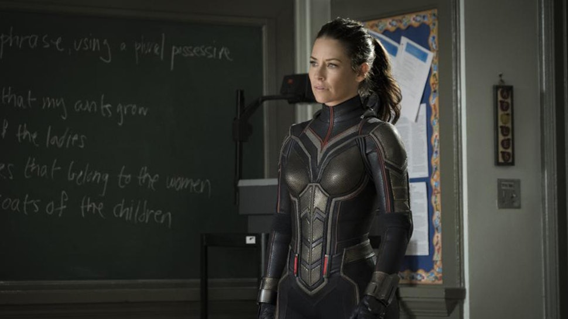

Evangeline Lilly sebagai Hope Van Dyne atau The Wasp sendiri merupakan sosok wanita bernama Hope Van Dyne. Ibunya adalah seorang sosialita kaya bernama Janet Van Dyne. Sang ayah Dr. Hank Pym saat itu menemukan Pym Partikel yang mampu menyusutkan mahluk hidup. Janet pun bekerjasama dengan Hank dan memaksa Hank melakukan prosedur biokimia pada tubuhnya sehingga Hope dapat memiliki sayap dan menyusut hingga berukuran kurang dari empat kaki.
Wasp memiliki kekuatan menyusutkan tubuh. Tak seperti Ant-Man yang hanya bias bergerak lincah, Wasp memiliki kemampuan terbang karena memiliki sayap di tubuhnya. Awalnya, Wasp selalu menggunakan partikel Pym saat menyusut, namun karena lama kelamaan, terjadi implantasi partikel sub-atom Pym pada tubuhnya sehingga DNA Wasp mampu menyusutkan diri sendiri tanpa perlu partikel milik Pym. Wasp mampu terbang dengan kecepatan hingga 64 km/jam dan dapat mengangkat benda berat walau dalam keadaan tubuh mengecil.
Di Ant-Man seri pertama yang rilis 2015 lalu, diceritakan bahwa Janet Van Dyne, yang merupakan ibu dari Hope Van Dyne (Evangeline Lilly), menghilang tanpa jejak saat masih menjadi hero, The Wasp. Tapi, di Ant-Man and the Wasp ini, ayah Hope, Dr. Hank Pym, percaya bahwa sang istri masih hidup. Bercerita beberapa tahun setelah kejadian Captain America: Civil War (2016) dan Avengers: Infinity War (2018), Scott Lang/ Ant-Man (Paul Rudd) menjadi tahanan rumah selama dua tahun karena dirinya yang dianggap melanggar peraturan S.H.I.E.L.D. Hal ini bikin Scott hanya bisa berdiam diri di rumah dan absen menjadi Ant-Man. Apalagi, ia dipakaikan pelacak, di mana FBI bisa mengawasi keberadaannya setiap waktu.
Tapi, keadaan berubah saat Hope dan Dr. Pym menculik Scott dari rumahnya dan meminta bantuannya. Hope, yang pada akhirnya menggantikan posisi sang ibu sebagai the Wasp, berhasil membius Scott dan membawanya ke laboratorium miliknya dan sang ayah. Di sini, mereka meminta bantuan Scott untuk ‘menemukan’ kembali Janet van Dyne yang terperangkap di ruang kuantum saat ia mengecilkan diri demi menyelamatkan banyak orang. Dr. Pym yakin istrinya masih hidup, saat ia sadar Scott pernah selamat dari ruang kuantum beberapa waktu lalu.
Untuk menemukan Janet, Dr. Pym dan Hope harus membangun sebuah terowongan yang mampu membuatnya pergi ke ruang kuantum. Tentu saja hal ini nggak bisa diwujudkan dengan mudah. Mereka perlu menghadapi Sonny Burch (Walton Goggins), seorang pengusaha yang menjual tool yang diperlukan oleh Dr. Pym dan Hope. Sayangnya, Sonny dan anak buahnya nggak dengan mudahnya menyerahkan tool tersebut. Di sisi lain, penjahat baru bernama Ghost/ Ava (Hannah John-Kamen), juga mengincar keberadaan Janet untuk menyelamatkan dirinya sendiri. Pertarungan Ant-Man dan the Wasp melawan geng Sonny Burch, Ghost, dan FBI yang mengejar Scott Lang pun ditampilkan dengan seru di film yang berdurasi nyaris 2 jam ini.